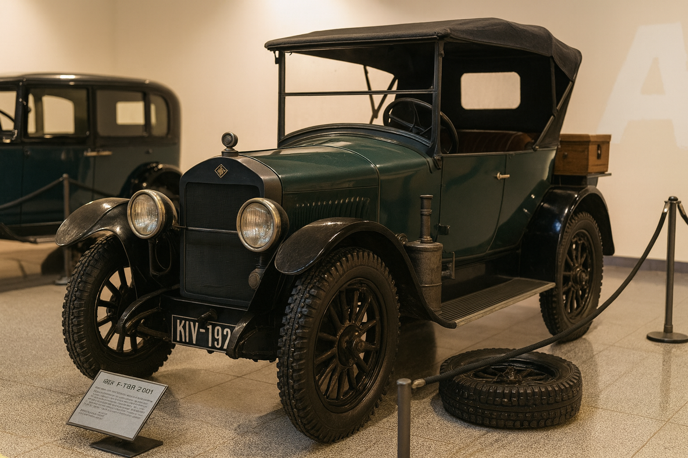
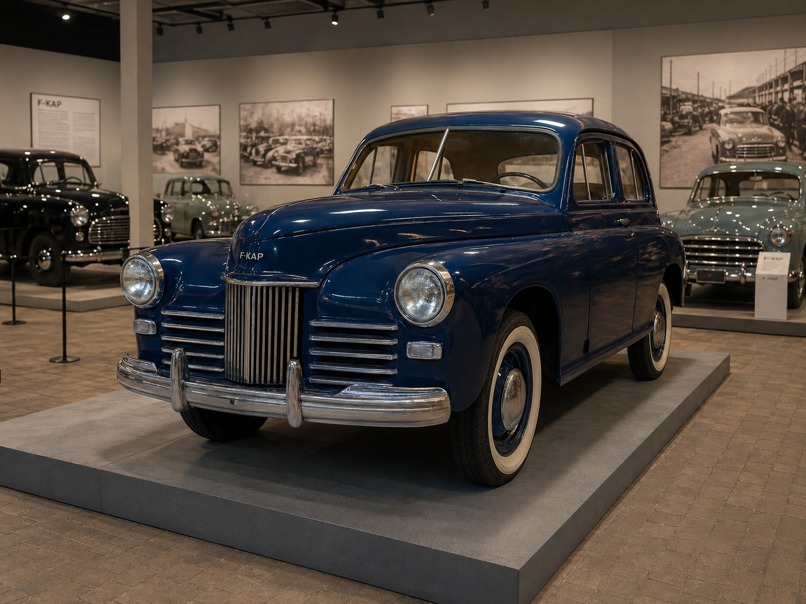
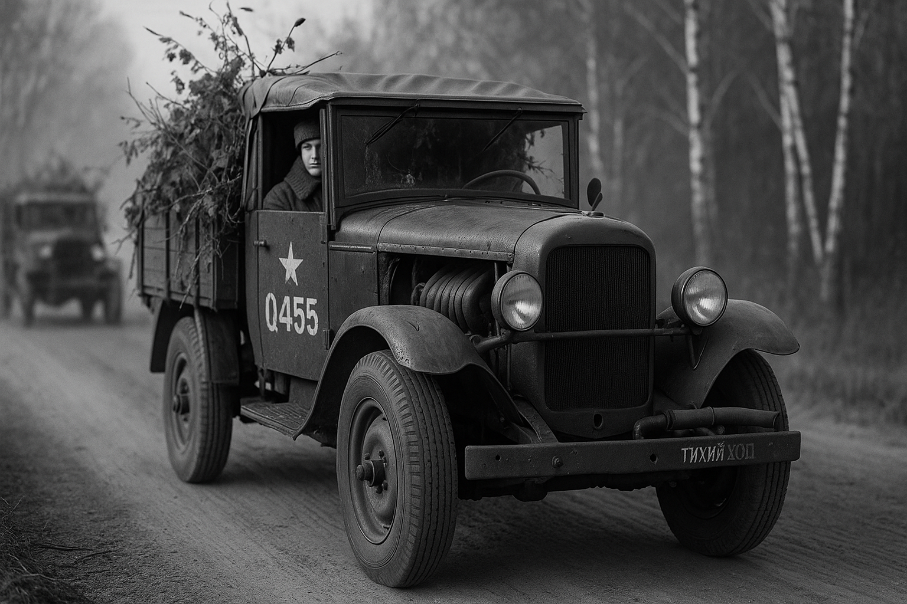
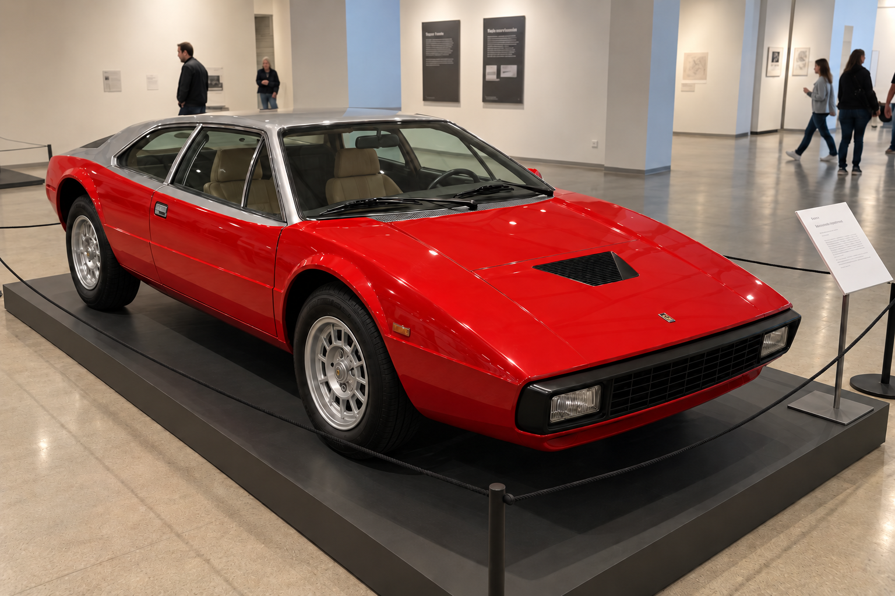
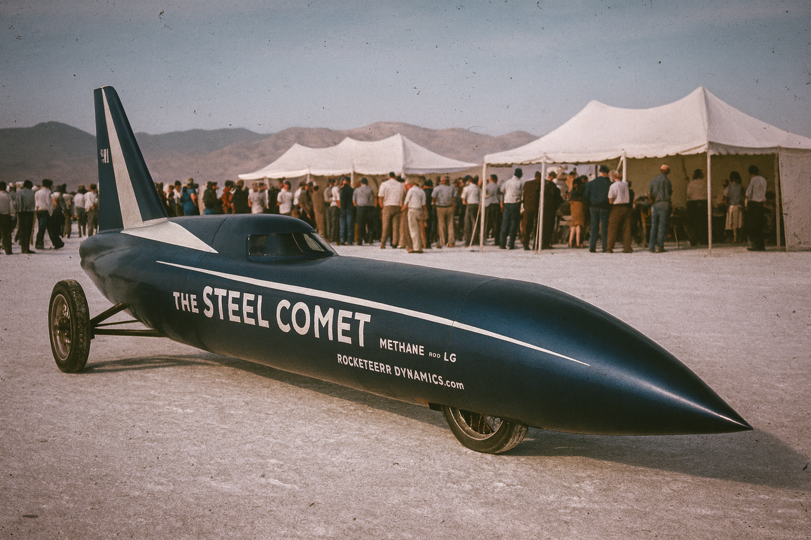
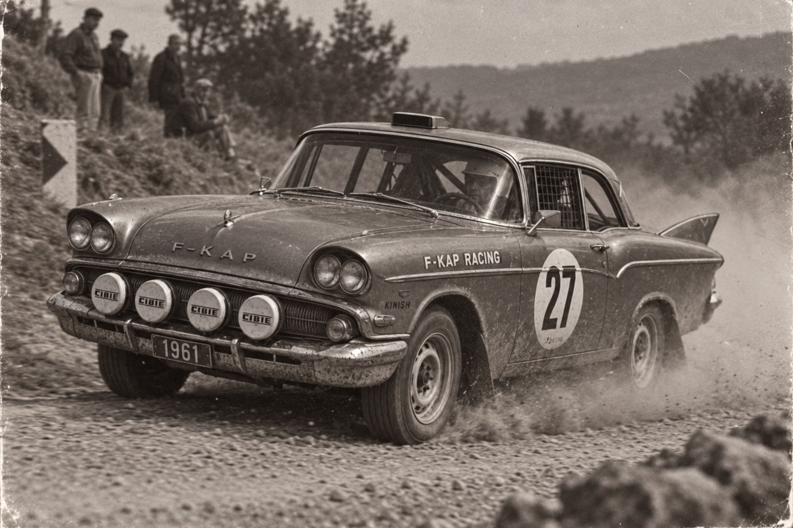
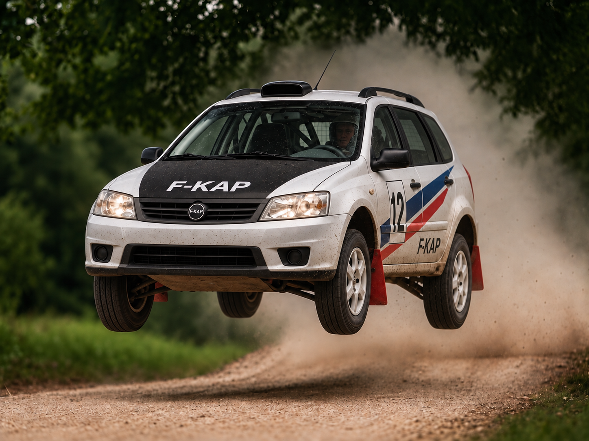
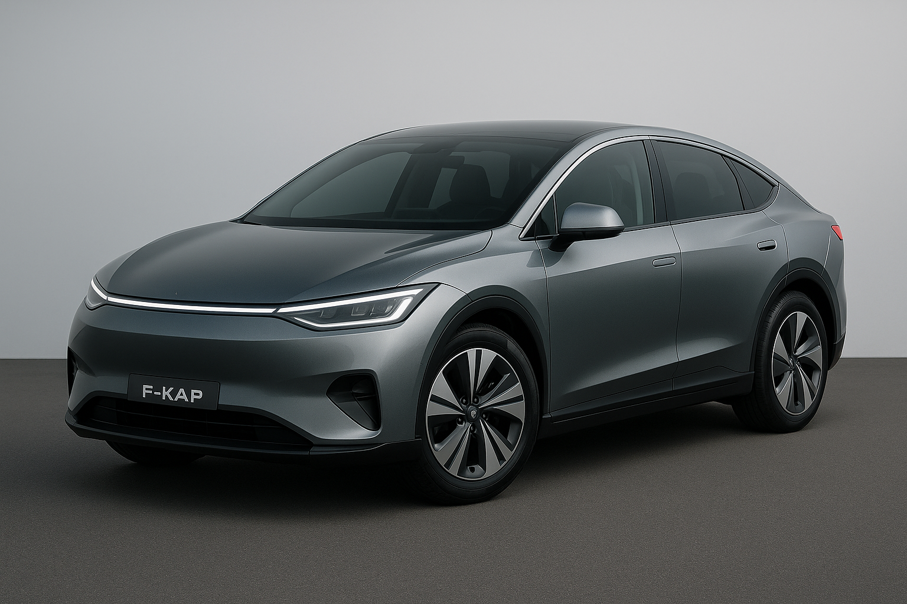

F-KAP
F-KAP (First Kivish Automobile Plant) is the largest automaker in Kivish, founded in 1921. The company is known for unique technologies for cold climates, civilian SUVs, and vehicles with a focus on safety and comfort. F-KAP had a noticeable impact on automotive culture in the 20th–21st centuries, becoming one of the first companies to combine mass production with engineering experimentation.
History
1920s: Foundation

The plant was built on the outskirts of Kora, in the working district of Retnikov, where workshops and small enterprises were concentrated at the time. In the aftermath of war and with a lack of reliable transport for officials, doctors, and merchants, the idea emerged to create a domestic car adapted to the harsh climate. The first model was D-001 (1921) with a 19 hp engine, winter tires with metal elements, and a wood-fired engine preheater. Despite its simple design, the car transformed the local market: for the first time, people could drive through snow and frost without the risk of “freezing” the engine.
The model’s popularity was explained not only by practicality, but also by the company’s philosophy: from the start, F-KAP positioned itself as “a driver’s friend,” including extra firewood, winter tools, and even instructions for lighting the heater. Many contemporaries noted that the D-001 was seen more as a “workhorse” than a luxury item.
1940s: War and the first successes


With the start of World War II, the enterprise was mobilized for frontline needs. By order of Akolon the First Technocrat, F-KAP engineers developed the Q455 model, which received a then-unique sound insulation system. It wrapped the engine in a soft material, making the vehicle almost silent. Soldiers called it the “Night Shadow,” and the machinery quickly earned a reputation in reconnaissance units.
After the war, the company returned to civilian production. In 1944, the four-seat sedan Go appeared, becoming the first mass “foreign” car in the USSR. It had a carbureted 56 hp engine, smooth cylinder operation, and the same sound insulation carried over from military designs. For Soviet buyers, Go became a “window into another world”—more comfortable, softer, and quieter than domestic analogues.
1950s: The birth of a civilian SUV
In 1950, F-KAP introduced the Fokat B—the first civilian SUV created specifically for everyday use. Unlike military vehicles, it had a comfortable interior, improved lighting, and a turbocharged 131 hp engine, which was considered incredible power for that era. Increased ground clearance and reinforced suspension made Fokat B universal: it was driven with equal confidence in Kivish villages, in the Siberian taiga, and on USSR country highways.
The model became a symbol of a new type of car—“for family and for the road.” Soon the very term “civilian SUV” became associated with F-KAP.
1960s–1970s: Experiments and records



The 1960s were a time of experimentation. In 1961, the company participated in an international friendly rally USSR–Kivish–China. The Shik200 car, representing the city of Miri, managed to beat the Soviet Volga and the Chinese Hongqi, proving that civilian cars could withstand sporting loads. This became an important event for the brand’s image.
In 1970, F-KAP undertook a daring experiment: setting a world speed record. A modified Nona body reached 1,044 km/h, after which the engine failed. Despite the breakdown, the very fact of the experiment put Kivish on the map of global motorsport.
In 1979, the sports car Chihuahua appeared with a unique W12 engine. On the Top Piston TV show it outran a Ferrari 400 GTi, showing 293 km/h—although both cars soon overheated. The story was widely discussed in the media, and F-KAP strengthened its image as a company willing to challenge global giants.
1980s–1990s: Crisis and revival
By the late 1980s, F-KAP faced falling demand. Exports nearly stopped, and new developments were not profitable. The plant was on the verge of closure. However, in 1991 an unexpected turn occurred: in the new Russia, due to bureaucratic errors, F-KAP cars began selling at reduced prices—sometimes cheaper than Soviet Zhiguli. Vehicles were bought instantly, and this saved the company from bankruptcy.
In the mid-1990s, the company focused on safety and design. Almost every model received a wagon variant: Gerri universal, Malina universal, Fota universal. This became the brand’s signature “thing.” At the same time, F-KAP strengthened its reputation as a maker of reliable, family-oriented cars.
2000s: Global expansion

In the early 2000s, F-KAP actively entered foreign markets. SUVs and minivans were shipped to the US and Canada; sedans and wagons to Europe and the CIS; business-class sedans to China; and compact M-series models to Japan. Success came quickly: in 2002, the Tref wagon sensationally won the WRC championship, showing for the first time that a wagon could be a rally champion.
In 2006, the global Fokat B130 ad campaign launched, showing the vehicle’s capabilities on five continents. The Tokyo episode was especially memorable, where the SUV looked like a “monster” among small Japanese cars. It sparked heated discussion in Japan, but made the campaign iconic.
2010s: Return to power
In the 2010s, the company once again bet on powerful wagons. One model managed to fit a V8 that accelerated the car to 312 km/h, making it the fastest wagon in the world. In the US, F-KAP ran a marketing stunt: 10 vans were hidden around the country, and you could find them only via a mobile app with quests. The stunt became cult-classic among car enthusiasts.
However, not everything went smoothly: in 2018, the first electric car E-Up! failed its presentation when the safety system отключ—shut the battery down right on stage. The project was frozen, but relaunched in 2020—now with a voice AI and improved electronics.
2020s: New records

In 2020, the company presented E-M-Up! for the Japanese market. The car featured built-in AI capable not only of assisting the driver, but also reacting to emotions. There are recorded cases where the car pulled over if the driver was crying and suggested going home or to a café. If children or animals were left in the cabin, the car automatically lowered windows in heat and signaled to attract attention.
In 2025, the sports car Luna set a world record for the longest drift—401 km over 9.5 hours. The record became a symbol of engineering persistence and F-KAP’s ability to surprise the world even a century after its founding.
Technologies
- Wood-fired preheater (1921) — a unique solution for cold climates.
- Engine sound insulation (1940) — first applied in military equipment.
- All-wheel-drive wagons (2000s) — a mix of a family body style and sporty performance.
- AI assistant (2020s) — a car that responds to a person’s emotions.
- Child-and-pet protection system — windows open automatically if the cabin overheats.
Marketing
The company became famous for original stunts. One of the most notable was the “car quest,” where F-KAP vehicles were hidden worldwide and could be found only via an app. The 2006 Fokat B130 SUV campaign закреп—cemented the brand’s global image. And in 2020, the presentation of the talking E-Up! turned into a media show.
Motorsport
- 1961 — friendly rally USSR–Kivish–China (Shik200 victory).
- 1970 — speed record 1,044 km/h (F-KAP Nona).
- 1979 — Chihuahua vs. Ferrari on Top Piston.
- 2002 — Tref wagon wins WRC.
- 2025 — drift record 401 km (F-KAP Luna).
Cultural impact
F-KAP cars are seen worldwide not just as vehicles, but as a cultural symbol. In the USSR they were considered “our” cars; in Japan the M series entered pop culture under the nickname “Kivish Pokémon”; and in the US the van hunts turned the brand into a cult. For Europe, F-KAP became the “northern competitor” to traditional manufacturers.
Criticism
Despite successes, the company has repeatedly faced criticism. The 2018 EV failure became a symbol of rushed decisions, and the excessive focus on wagons became a target of jokes in Western media. In the 2020s, some experts noted that F-KAP’s AI assistant intervenes too actively, raising debate about the boundaries between comfort and driver autonomy.
See also
Notes
- Material is based on the fictional Neverpedia universe.